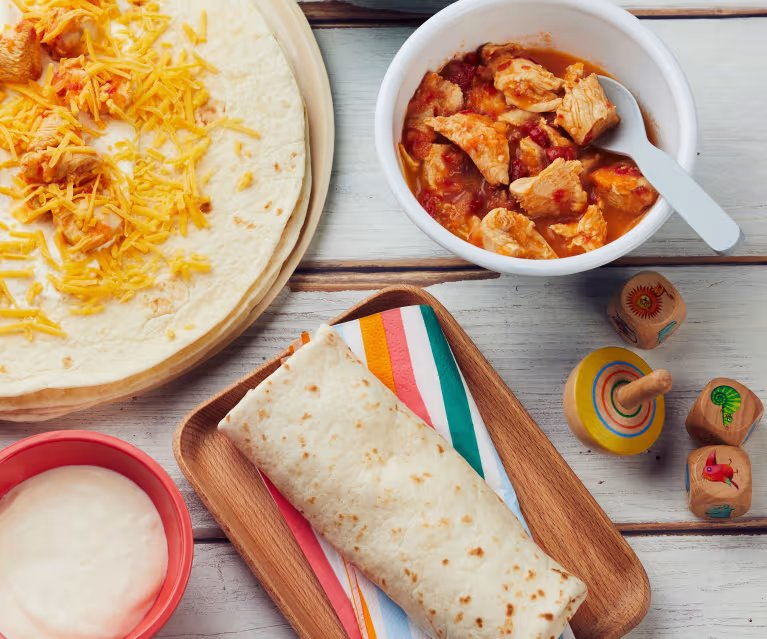

Fajitas au poulet, cheddar et poivron
Ingrédients
6×
- 1 petit oignon
- 1 poivron rouge
- 2 tomates
- 10 g d'huile d'olive
- 2 blancs de poulet
- 1 c. à s. de concentré de tomate
- sel
- 6 tortillas de blé
- 100 g de crème fraîche épaisse
- 100 g de cheddar râpé

Préparation
Étape 1
Préchauffer le four à 160ºC. Mettre 1 petit oignon en quartiers, 1 poivron rouge épluché en dés et 2 tomates en quartiers dans le bol. Mixer 5 sec/vitesse 4.
Étape 2
Ajouter 10 g d'huile d'olive et rissoler 6 min/120ºC/vitesse 1.
Étape 3
Ajouter 2 blancs de poulet émincés, 1 c. à s. de concentré de tomate et du sel. Cuire 5 min/100ºC/sens inverse/vitesse mijotage, puis bien égoutter dans le panier.
Étape 4
Chauffer 6 tortillas de blé quelques minutes au four. Garnir de 100 g de crème fraîche épaisse, du mélange au poulet et de 100 g de cheddar râpé. Remettre au four jusqu’à ce que le fromage fonde.
Conseils
- Ajouter du guacamole après cuisson.
Résumé
1 petit oignon
1 poivron rouge
2 tomates
Préchauffer 160ºC Mixer 5 sec/vitesse 4
10 g d'huile d'olive
rissoler 6 min/120ºC/vitesse 1
2 blancs de poulet
1 c. à s. de concentré de tomate
sel
Cuire 5 min/100ºC/sens inverse/vitesse mijotage
6 tortillas de blé
100 g de crème fraîche épaisse
100 g de cheddar râpé
Garnir